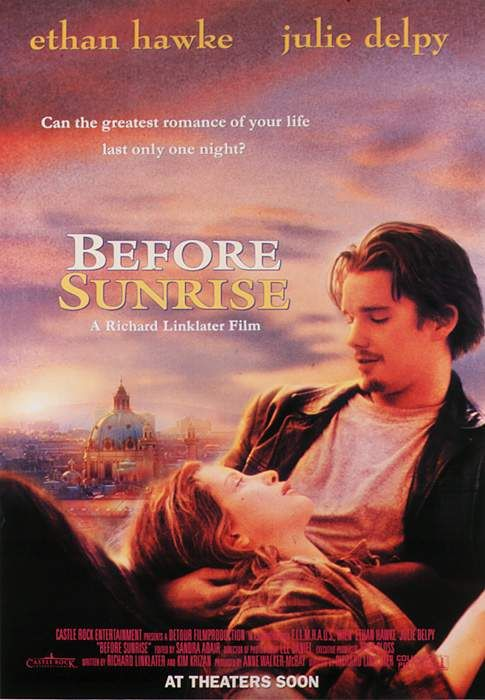
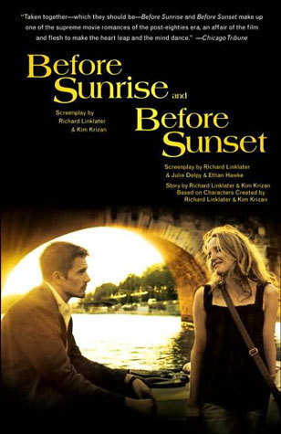
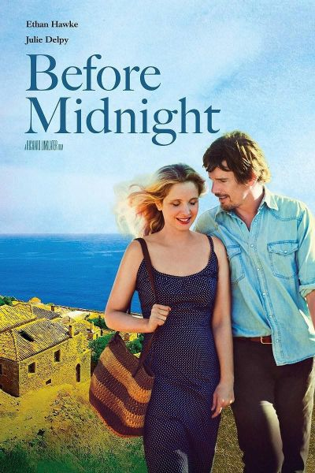

Before Series
  
Before sunrise(1995, Warner Bros., 105 min, USA, Dir: Richard Linklater)
Director Richard Linklater’s charmingly wistful and intelligent ode to fleeting romance sparks on the impulse of American train passenger Jesse (Ethan Hawke) persuading his lovely fellow traveler,
student Celine (Julie Delpy), to disembark in Vienna and share his final night on the Continent.
Before sunset(2004, Warner Bros., 80 min, USA, Dir: Richard Linklater)
Director Richard Linklater’s touching but unsentimental sequel to BEFORE SUNRISE finds parted lovers Ethan Hawke and Julie Delpy reuniting briefly as he returns to Paris as a successful writer promoting his latest bestseller. Its naturalistic, real-time progression proves more genuine and reality-based than the typical Hollywood treatments of romance, and consequently much more affecting. Seeing these two films together shows not only the nuances of ongoing, closely linked love and friendship but also the subtle, sometimes painful experience of growing up.
Before midight(2013, Sony Pictures Classics, 109 min, USA, Dir: Richard Linklater)
The third film in Richard Linklater’s trilogy (following BEFORE SUNRISE and BEFORE SUNSET) is quite possibly the best in its hilarious, devastating, and ultimately poignant depiction of the complexities of long-term commitment. Eight years after we last saw them, Jesse (Ethan Hawke) and Celine (Julie Delpy) have left their previous lives behind to be together at last - but does getting everything they wished for bring them happiness? In answering the question, Linklater crafts his most romantic and unblinkingly truthful film to date.